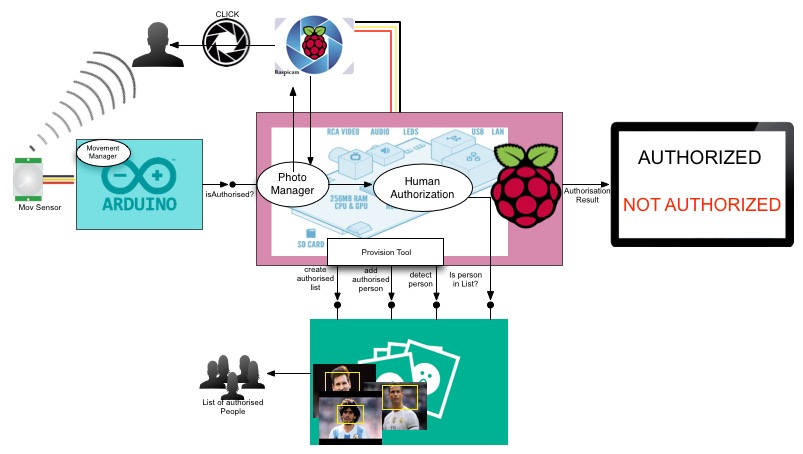

Welcome to Human Authorization
This project aims to build your own low cost authorization tool by means of the face detection.

The picture above shows the architecture employed to implement our Human Authorization low cost tool.
- Movement Sensor
- Arduino
- Raspberry Pi
- Raspicam
- Microsoft Oxfor Project API
- Screen